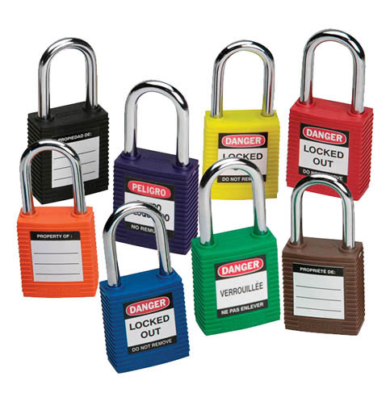
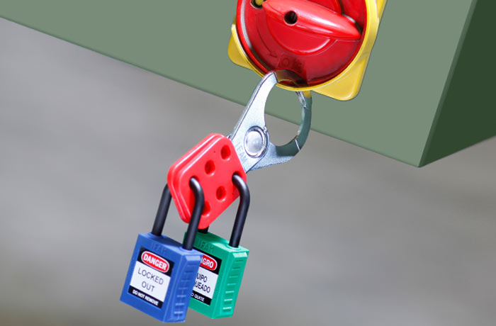
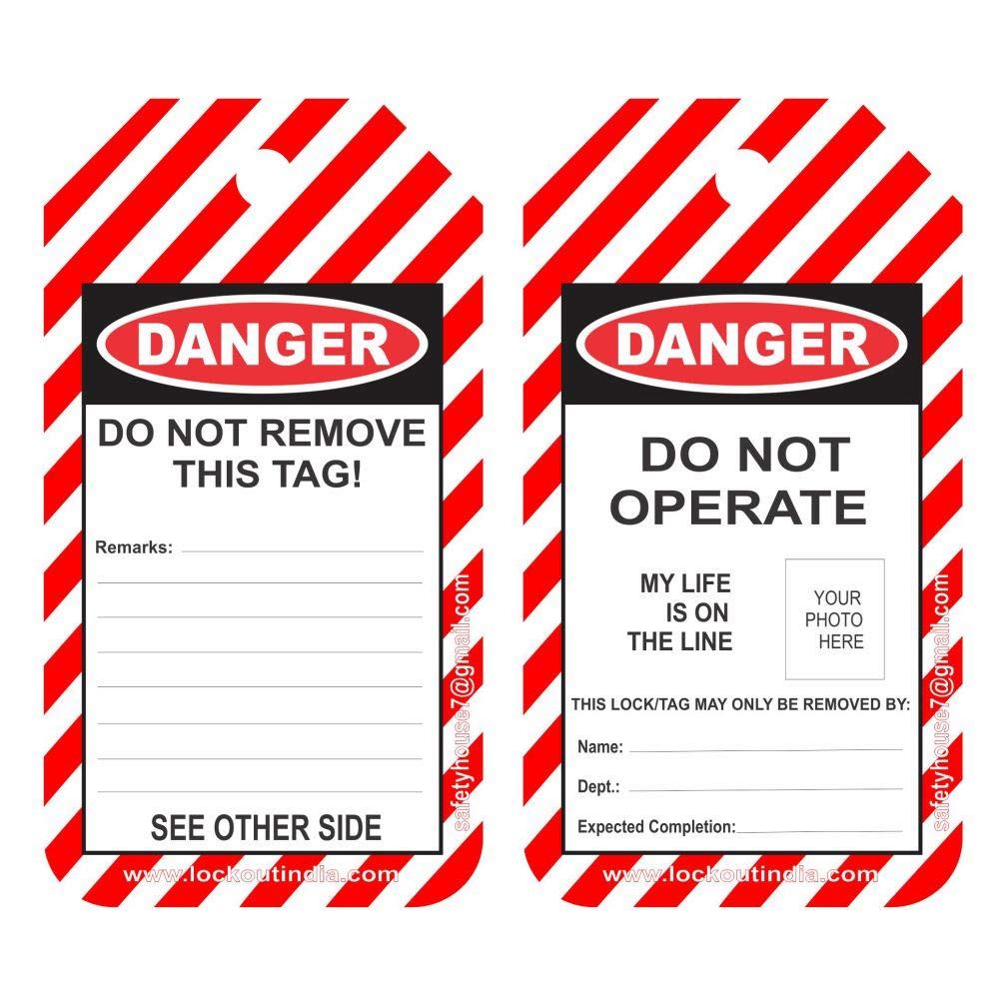

Lockout Tagout, o su acrónimo LOTO, es un procedimiento de seguridad para desconectar y
consignar las distintas fuentes de energía de los equipos industriales, mientras las operaciones de
mantenimiento, limpieza o reparación se llevan a cabo. El procedimiento LOTO protege a los
trabajadores tanto de una puesta en marcha accidental de las energías vivas como de las energías
residuales y de un encendido imprevisto que pueda provocar un accidente durante
un servicio de mantenimiento o aislamiento (cortes, atrapamientos, quemaduras, electrocución, etc.).
Su funcionamiento consiste en que el supervisor usa un solo trabajo de bloqueo para cada punto
de control de energía para bloquear el equipo. Las llaves para los trabajos de bloqueo son colocados
en una caja de bloqueo. Cada trabajador coloca su propio candado en la caja de bloqueo. Mientras
haya un candado dentro de la caja de bloqueo, no se podrá tener acceso a las llaves de los trabajos
de bloqueo, y los dispositivos para aislamiento de energía no pueden ser operados.
Pasos:
Bloqueo: Se asegura que el elemento queda desenergizado, que se corta el paso a la
energía viva.
Consignación: dispositivo físico que asegura la no puesta en marcha de la energía
y que solamente podrá ser retirado por el usuario o usuarios que lo hayan bloqueado.
Señalización: es importante añadir una etiqueta en el punto de bloqueo con los
datos de la persona responsable de la consignación.
Las cajas de bloqueo son ideales para los grupos encargados de tareas de mantenimiento que
trabajen
por turnos, con horarios escalonados o mediante subcontrata. Las cajas de bloqueo sirven para
guardar
hasta 12 candados de consignación, llaves, etiquetas y demás elementos del equipo necesarios durante
las operaciones de reparación, mantenimiento o supervisión de la maquinaria.
Candados:
Un candado de consignación brinda una medida de seguridad más allá de la que ofrece un candado
común. Si se usa adecuadamente, junto con un proceso de bloqueo bien planificado, el candado de
seguridad impide que los empleados activen accidentalmente el equipo mientras alguien está
trabajando o manipulando la instalación.

Pinzas múltiples:
Permiten añadir más candados a un bloqueo y, por lo tanto, son recomendables en trabajos
grupales, cuando hay más personas trabajando en el mismo punto de bloqueo.

Etiquetas:
Las etiquetas identificativas o tags permiten la señalización visual y nos indican la persona
que ha realizado la consignación. Disponemos de etiquetas estándar y personalizadas.

IoT y Automatización
IoT es la agrupación e interconexión de dispositivos y objetos a través de una red, dónde
todos ellos pueden interaccionar y ser visibles. Estos objetos pueden ser sensores,
dispositivos mecánicos o objetos cotidianos. El objetivo principal del IoT es la interacción de
máquina a máquina, sin la intervención de un humano.
Esta tecnología asociada al IoT permite almacenar datos y mandarlos a la red para la
realización de su análisis.
Automatización se refiere a una amplia variedad de sistemas y procesos que operan con mínima
o nula intervención humana. En los procesos de automatizacion el control de las máquinas es
realizado por ellas mismas gracias a sensores de control que le permiten percibir cambios en sus
alrededores de ciertas condiciones tales como temperatura, volumen y fluidez de la corriente
eléctrica y otros, sensores que permiten a la máquina realizar ajustes necesarios para compensar
estos cambios.
U-Safety
La idea principal para U-Safety es lograr la implementación de un sistema automatizado conjunto
al sistema de seguridad que se está utilizando mucho actualmente y que es conocido como la caja
LOTO, para poder brindar mayor seguridad a los empleados de industrias contra accidentes y al
mismo tiempo tener un mayor control de sus actividades cotidianas, para poder medir el rendimiento
que cada uno tiene en las actividades de la empresa.
Esto se logra mediante la implementación de IoT, la automatización y el análisis de datos
para la monitorización. Se automatizo todo el proceso del uso de la caja LOTO, desde del proceso de
solicitud de permisos y el mejorar la misma seguridad de la caja y posteriormente integramos el
análisis de datos y la monitorización en el software Grafana, tan necesaria para el manejo de
cualquier negocio o empresa hoy en día.
Se hace uso de la placa Raspberry Pi como el dispositivo IoT, integrado con un programa
diseñado en el software Node-red y Grafana.
Ventajas de U-Safety
Escalabilidad: Al ser un proyecto en el que se integra el internet de las cosas, el
proyecto tiene la capacidad de crecer a niveles en los que incluso se puede monitorear el
funcionamiento de la mayor parte del proceso de producción de las industrias.
Versatilidad: Una de las mayores fortalezas del proceso de desarrollo de U-Safety
es que puede ser aplicable, con ciertas modificaciones, a sectores ajenos a la industria,
pudiendo ser introducido en mointorización en restaurantes e incluso en áreas de la domótica.